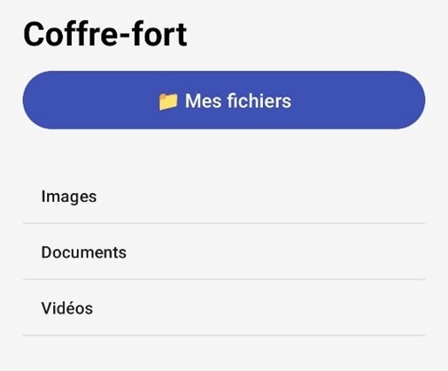

Dans le cadre de ma formation, j’ai réalisé en autonomie un projet dont l’objectif était de concevoir une application mobile Android permettant de stocker des fichiers de manière sécurisée. Ce projet s’est déroulé sur un total de 44 heures, dont 8 heures de cours encadrées et 36 heures en autonomie. Il m’a permis de mettre en pratique mes compétences en programmation JavaScript, en développement sous Android Studio, ainsi que quelques notions de cybersécurité appliquées à la gestion des mots de passe et à la protection des données utilisateurs.
L’objectif principal de cette application était de proposer un espace personnel et confidentiel sur téléphone, où l’utilisateur peut enregistrer, consulter et gérer ses documents de manière simple et sécurisée. Le développement a nécessité la création d’une interface intuitive, la mise en place d’un système d’authentification par mot de passe, la gestion du stockage interne du téléphone et l’affichage des fichiers sous une forme basé sur l’explorateur Windows. J’ai également relié les différentes pages de l’application en JavaScript afin d’assurer une navigation fluide et cohérente entre les écrans.
La première étape du projet a consisté à rédiger un cahier des charges détaillant les fonctionnalités minimales à développer ainsi que les ajouts optionnels envisagés. J’ai ensuite conçu la structure générale de l’application, en créant les différentes pages et en travaillant sur leur mise en forme. Une fois la base graphique réalisée, j’ai intégré la logique de navigation et vérifié la bonne communication entre les pages grâce à du code JavaScript. J’ai ensuite développé la partie la plus technique : la gestion du stockage interne et l’affichage dynamique des documents, permettant à l’utilisateur de visualiser ses fichiers directement depuis l’application. Enfin, j’ai ajouté un système de sécurisation de l’accès par mot de passe afin de protéger les données enregistrées.

L’application obtenue est pleinement fonctionnelle, offrant une navigation complète et un stockage local efficace. Ce projet m’a permis de renforcer mes compétences en programmation JavaScript et en conception d’applications Android, tout en découvrant concrètement les enjeux de la sécurité des données sur mobile. J’y ai également développé des compétences importantes en autonomie et en organisation.